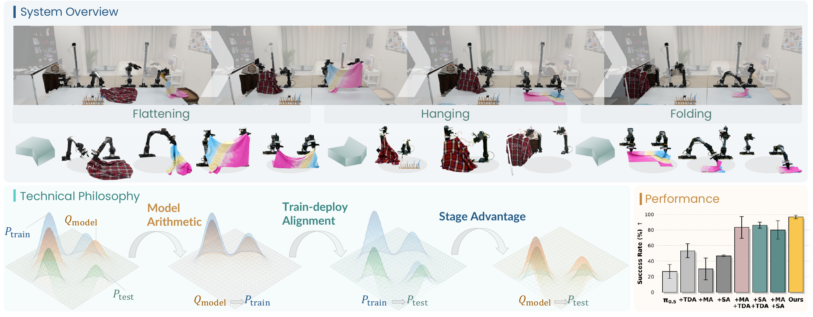
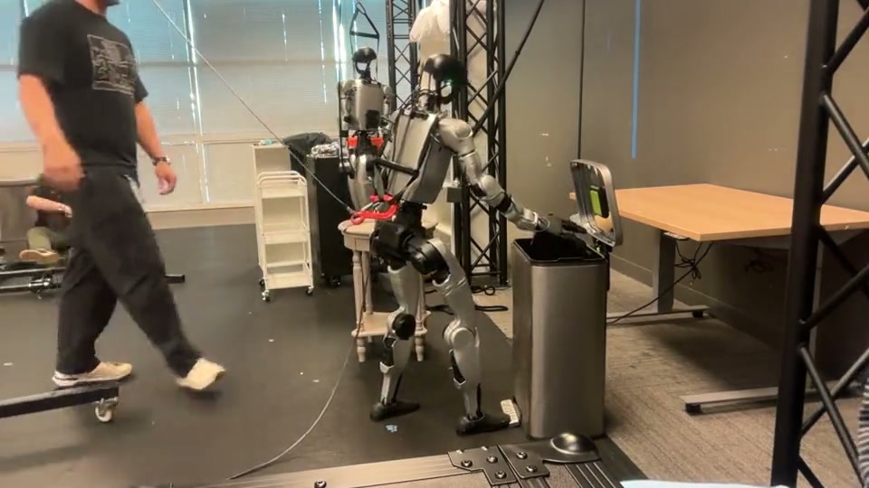
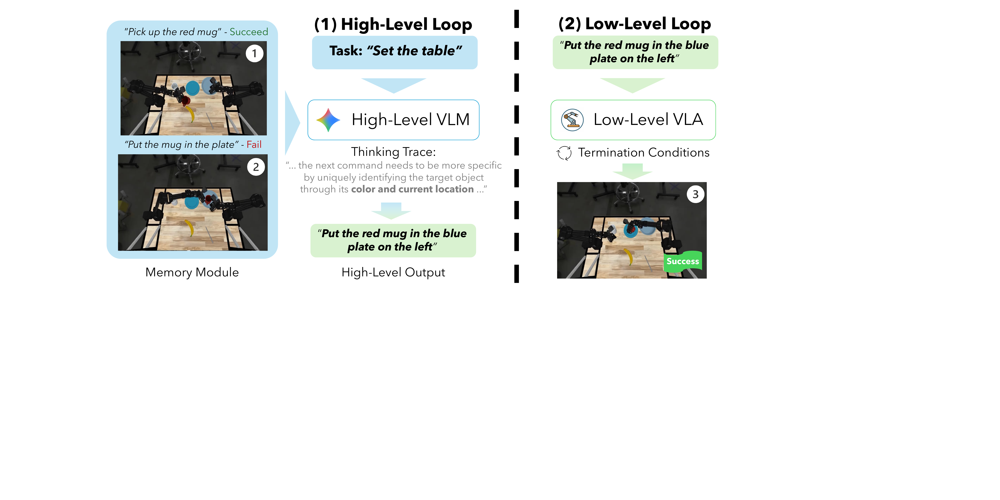
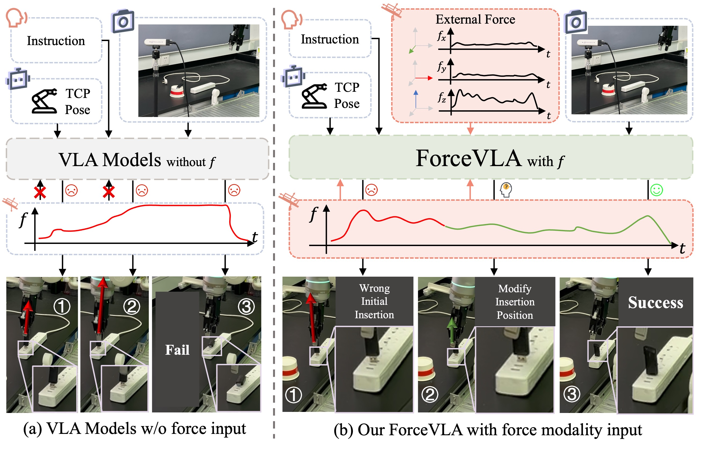

- 机器人本体和基座位置固定
- 相机视角和桌面高度基本不变
- 物体与初始状态的分布有限
- 任务在一张桌面内、任务链较短
01
先从我们已经做出来的效果说起
从目前的复现实验和组内讨论看，叠衣服、叠方块、抓取放置这类常见桌面任务，已经不再只是“有没有模型能做”的问题。下面几条是我们从实际实验中得到的阶段性观察。
1. 约 500 条数据，已经能把叠衣服做到可接受
- 我们收集了约 500 条叠衣服任务数据。
- 在成熟 VLA 基座上训练后，实际性能已经达到可以接受的水平。
- 对于固定本体、固定桌面和相对稳定的任务流程，获得基本可用能力所需的数据规模并没有想象中大。
2. 加入 χ₀ 数据后，模型还能学出更复杂的操作
- 在原有数据中加入 χ₀（kai0）数据后，模型能够学出先在空中抖动、将衣物展平，再继续折叠的操作。
- 这种行为不只是重复抓取和放置，而是包含了有意义的中间状态与操作策略。
- 成熟基座已经具备较强的动作学习能力；数据里有没有出现关键操作方式，会直接影响模型最终能学出什么。
3. 前期“跑不通”主要是系统接口问题
- 策略早期一直跑不通、动作明显卡顿，一度看起来像是模型能力不足。
- 后来发现，主要问题来自坐标系变换没有处理正确，以及相邻 action chunk 之间缺少平滑衔接。
- 把坐标、时序和 chunk 衔接问题解决以后，很多原本归因于模型的异常现象也随之消失。
判断模型效果之前，首先要确保坐标系、控制频率、动作表示和执行接口是正确的，否则系统层面的错误很容易被误判为学习能力不足。
4. 系统打通以后，问题基本转向“怎样收集数据”
- 哪些初始状态需要覆盖？
- 衣物处于不同形态时，是否都有对应示范？
- 数据里是否包含抖动、展平等关键中间操作？
- 模型执行偏离以后，有没有失败恢复轨迹可以学习？
- 不同类型的数据应该直接混合，还是分别训练后再组合？
我们目前的感受是：在这类桌面任务上，成熟基座已经足够强。系统接口打通以后，剩余问题几乎都指向数据的质量、覆盖、组合和结构。
5. “做得差不多了”有一个明确边界
- 换房间、换高度、换视角后的稳定性
- 移动、操作与全身控制的连续衔接
- 长程任务中的终止判断和错误恢复
- 毫米级、遮挡下的接触与受力控制
6. 公开工作也支持这一观察
02
为什么我们开始更关注数据，而不是模型细节？
这个判断首先来自我们自己的实验感受：在 χ₀（kai0）这类方案里，模型结构本身对最终效果的影响并没有想象中大。直接把同一批任务数据交给 π₀.₅ 训练，也可能得到相近的基本能力。真正持续影响成功率的，往往是采到了什么数据、不同数据怎样组合，以及训练分布和实际部署之间是否一致。
χ₀ 本身也说明了这一点。它没有换掉 π₀.₅ 的主干，而是直接对开源 π₀.₅ 做全参数微调，把主要设计放在数据组织、训练信号和部署对齐上。换句话说，它更像是在回答“怎样让一个已经足够强的基座吃对数据”，而不是重新发明一个 VLA。

按状态、外观和任务阶段形成互补子集，而不是只看总 episode 数。
用 DAgger 和人为构造的失败状态采集恢复轨迹。
子集分别训练后做权重合并，实验中超过了全数据联合训练。
处理动作延迟、chunk 衔接和真实执行造成的时序偏差。
因此，“把 χ₀ 的数据直接交给 π₀.₅ 训练是否也差不多”是一个值得认真做的对照实验。不过这里的“数据”不能只理解为原始 demonstration。χ₀ 的收益还来自数据如何拆分、哪些失败状态被补进来、用什么 OOD 集合选择组合，以及训练动作和真实控制频率如何对齐。论文甚至观察到，基于不同数据子集训练的 checkpoint 做 Model Arithmetic，能够超过直接把全部数据混合训练的候选。[6]
下一阶段更值得优化的，可能不是 dataset size，而是 dataset geometry：覆盖了哪些状态、状态之间怎样连接，以及模型犯错以后能否在数据中找到回来的路径。
数据 scaling 研究也给出了相似结论：环境和物体的多样性比在同一条件下重复采集更多 demonstration 更重要，重复数量达到阈值后边际收益明显下降。π₀.₅ 的开放环境泛化，同样依赖多机器人数据、网页视觉语言数据、目标检测、子任务预测和低层动作之间的异构联合训练。[7][2]
数据中心 ≠ 无差别堆数据
跨本体数据如果没有统一物理表示和合理采样比例，可能产生负迁移。数据质量、覆盖、动作表示、失败恢复和混合策略是一个整体设计问题。[8]
这并不意味着模型结构不重要
如果只问“能不能把东西放好”，架构差异的边际收益可能正在变小；但如果问实时性、显存、控制频率和部署成本，架构仍然很重要。TurboVLA 在 4090 上以约 30 Hz 运行的价值就在这里：它未必让方块叠得更聪明，却说明相近的任务能力可以用更低成本、更高频率实现。
沿着这个判断继续往下，选题自然会发生变化：与其在同一张桌面上继续比较几个百分点，不如主动改变任务本身，让现有系统面对原来没有覆盖的状态。我们目前想到的三个方向，分别对应空间范围、任务长度和接触精度三个维度。
03
第一步：先把任务的空间范围扩大
最直接的扩展，是把“桌面内操作”变成“桌面之间的操作”：从桌 A 拿起物体，带着它移动，再放到桌 B。原来的抓取技能仍然有用，但机器人不再始终站在最佳位置。

定位目标→走近桌面→建立操作姿态→抓取→携物移动→重新放置
GR00T 官方已经把同类任务做成完整 workflow：例如从货架取箱子放入蓝色容器，以及从小桌拿易拉罐投入垃圾桶。流程覆盖环境搭建、遥操作采集、LeRobot 数据转换、GR00T 后训练和闭环评估。[9]
73.6%走到桌前并抓取
159 / 216
159 / 216
66.7%桌面易拉罐到垃圾桶
8 / 12
8 / 12
官方记录的失败主要来自漏抓、抓取不稳定、把物体推出可达区域，以及踩不中垃圾桶踏板。自主重试被计为成功。
为什么真实场景不好复现？
桌面策略通常默认相机、基座、桌面高度和机械臂工作区相对固定。
移动操作底盘或双足每次停靠都会改变视角、距离、可达性和后续抓取分布。
全身系统还要匹配遥操作设备、手爪、全身控制器、相机同步、地面摩擦和安全边界。
误差传播前一阶段少停十厘米，可能让后面的视觉输入和关节可达域一起偏移。
这也解释了为什么我们觉得这个方向值得做、但真实场景很难复现。它并不只是“训练一个带腿的 VLA”，而是要求导航、全身控制、视角变化和机械臂操作在同一套系统中连续工作。对实验室而言，比较合理的起点不是直接复现完整家庭任务，而是先做“桌 A 取物—移动—桌 B 放置”的最小闭环，并把导航到位、抓取、携物和放置分别评测。
04
第二步：再把局部能力接成长程任务
一旦任务跨越多个位置和阶段，问题就不再只是每个动作能否做好，还包括下一步做什么、何时切换、失败以后回到哪里。长程任务未必需要一个 VLA 从头控制到尾；更现实的做法，是在已有局部技能外面加一个调度器。

高层调度器分解 · 选择 · 验证 · 恢复
Harness VLA 不让 agent 直接输出关节动作，也不允许它在部署时发明新技能。它只暴露一组很小的固定原语：移动、姿态调整、夹爪控制、底盘导航，以及唯一的学习型原语 VLA_ACT。每次调用 VLA 前先把机器人放进合适的局部状态，调用后重新观察和验证；如果接触不稳定，就换姿态或视角再试。[10]

这些结果对我们做调度器有什么启发？
- 高层 reasoning 比单纯扩大高层 VLM 更重要。开启 thinking 持续改善结果，但 Lite、Flash、Pro 的规模差异没有稳定转化为系统收益。
- 低层 VLA 的 steerability 是瓶颈。任务内微调如果损害指令跟随能力，长程组合表现反而会明显下降。
- 何时切换和用什么状态切换很重要。成功检测通常优于预先猜测执行时间；固定时长时，4–8 秒是论文建议的折中范围。
- 结构化观测比原始图像更可靠。bounding box 和接触信息能显著改善高层判断。
- 原始历史不是有效记忆。简单增加当前 episode 的上下文帮助很小，跨 episode 提炼出的成功经验更有价值。
配置短程长程推理真实 ALOHA
Best hierarchy78.22%67.08%80.89%12 / 15
Naive hierarchy69.57%40.56%66.49%9 / 15
Flat VLA69.63%25.30%50.90%3 / 15
三种设置使用相同的底层 VLA 和初始任务指令。优势主要出现在需要组合与推理的任务，而不是最短的原子技能。[11]
05
第三步：把任务推进到真正依赖接触的阶段
空间范围和任务链解决的是“做得更远、更久”，插头插座一类任务则要求“做得更准”。它不是普通 pick-and-place 的缩小版：接触以后视觉可能被机械手遮挡，真正决定成功的是毫米级错位、摩擦、受力方向和是否已经插到底。

这类任务也会迫使我们把前面“数据比模型细节更关键”的判断做得更完整。只收成功示范通常不足以覆盖插偏、卡住和过度施力后的状态，因此训练流程会从一次性的 behavior cloning 变成一个数据闭环：先用成功示范获得基本策略，再部署策略、观察它如何失败，收集人类接管与恢复轨迹，最后利用奖励、价值函数或 residual policy 做强化学习。
成功示范→监督微调→机器人 rollout→失败 / 人类干预→奖励与价值学习→RL 后训练
告诉模型一条任务可行路径，适合作为初始化。
覆盖错位、打滑、卡住、过度施力和视觉遮挡后的状态。
补充 RGB 难以观测的接触阶段和插入深度。
区分“看起来像”与真正插稳、插到底的动作。
GR00T 官方对困难任务的建议也是从约百条遥操作示范开始，训练后通过 HG-DAgger 收集策略失败时的人类纠正。π*₀.₆ 的 RECAP 则给出了一条更完整的路径：离线 RL 初始化、任务示范微调，再使用真实机器人自主经验、奖励标签和人类干预继续训练。[12][13]
精细任务的核心不是盲目增加 rollout。
失败数据需要区分可恢复近失误、无效重复和危险状态；真实机器人 RL 还必须设置力矩、速度、空间和人工接管边界。否则“收集失败”很容易变成收集噪声或损坏硬件。
06
回到我们目前真正可以做的事情
综合目前的实验效果，我们没有必要从零训练一个 foundation VLA。更可行的路线是沿用 π₀.₅、GR00T 等成熟基座，把时间投入到现有桌面实验没有覆盖的状态，并逐步提高系统难度。
跨工作区移动操作
先做“桌 A 取物—移动—桌 B 放置”的最小闭环，分别记录到位、抓取、运输和放置成功率。
主要风险：硬件与全身控制复现成本长程任务调度器
冻结一个可用 VLA，增加解析原语、成功检测、重试和跨 episode 记忆，研究策略之间的 handoff。
主要风险：需要清晰证明不是手写状态机插入与精细装配
加入力觉，建立成功示范—失败状态—人类纠正—RL 后训练的数据闭环。
主要风险：奖励、安全与真实 rollout 成本
整条思路
我们目前已经能用成熟 VLA 做出不少单桌面任务，因此下一步的重点不再只是换模型，而是把数据分布做对，并逐步把实验从一张桌面扩展到跨工作区，从一个局部技能扩展到长程组合，再从视觉主导的抓放推进到依赖力觉、失败恢复和强化学习的精细接触。
REF
参考工作
- π₀: A Vision-Language-Action Flow Model for General Robot Control, 2024.
- π₀.₅: A Vision-Language-Action Model with Open-World Generalization, 2025.
- TurboVLA: Real-Time VLA at 32 Hz on an RTX 4090, 2026.
- What Are We Actually Benchmarking in Robot Manipulation?, 2026.
- LIBERO-X: Robustness Litmus for Vision-Language-Action Models, 2026.
- χ₀: Resource-Aware Robust Manipulation via Taming Distributional Inconsistencies, 2026.
- Data Scaling Laws in Imitation Learning for Robotic Manipulation, 2024.
- Rethinking VLA Scaling: Alignment, Mixture, and Regularization, 2026.
- NVIDIA GR00T Loco-Manipulation Workflow, 2026.
- Harness VLA: Steering Frozen VLAs into Reliable Manipulation Primitives, 2026.
- What Matters in Orchestrating Robot Policies, 2026.
- ForceVLA: Enhancing VLA Models with a Force-Aware MoE, 2025.
- A VLA that Learns from Experience: π*₀.₆ / RECAP, 2025.
- VLA in Robotics: A Survey of Datasets, Benchmarks, and Data Engines, 2026.